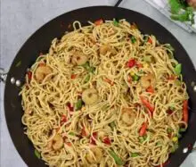

This is almost like having sea-food fried rice
- Blend your plum tomatoes, red bell peppers, 1 large onion, 3 scotch bonnet peppers, garlic and ginger. Then, boil the blended mixture on medium - high heat till the water is reduced and has thickened significantly to look like a paste; this should take about 20 minutes if placed on high heat.
OR
- Cut your tomatoes, peppers, onions, garlic and ginger. Season with a little olive oil and salt. Place in a pan and roast in a preheated oven of 350C for 20 minutes. Blend after